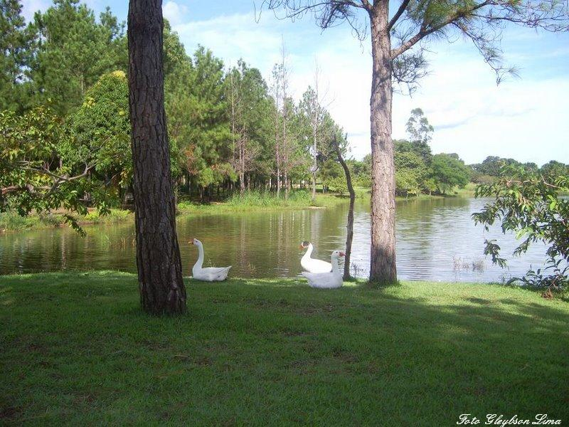

Lago Municipal
Localização Rua Perimetral, , SN, Em frente o IFTO - CENTRO CEP 77.470-000 - Formoso do Araguaia - TO Pontos de Referência Próximo ao IFTO Horário de Funcionamento Segunda, Terça, Quarta, Quinta, Sexta, Sábado, Domingo, Feriado: 24 horas Tipo de Visita Não guiada; Entrada Franca Atividades Realizadas PASSEIO, COOPER, PIQUINIQUE
